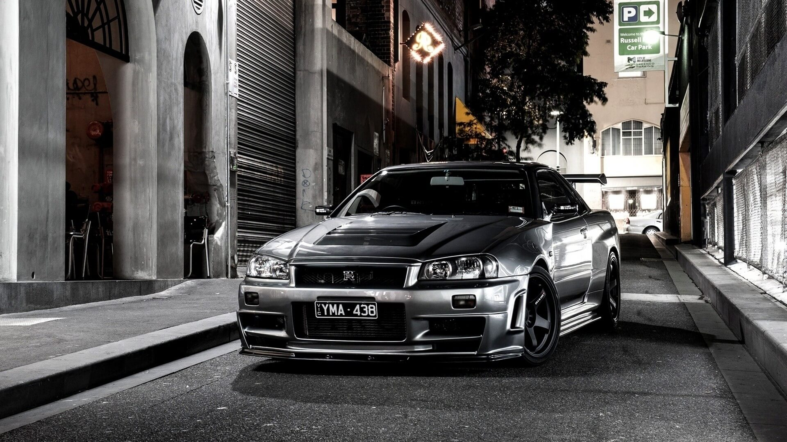
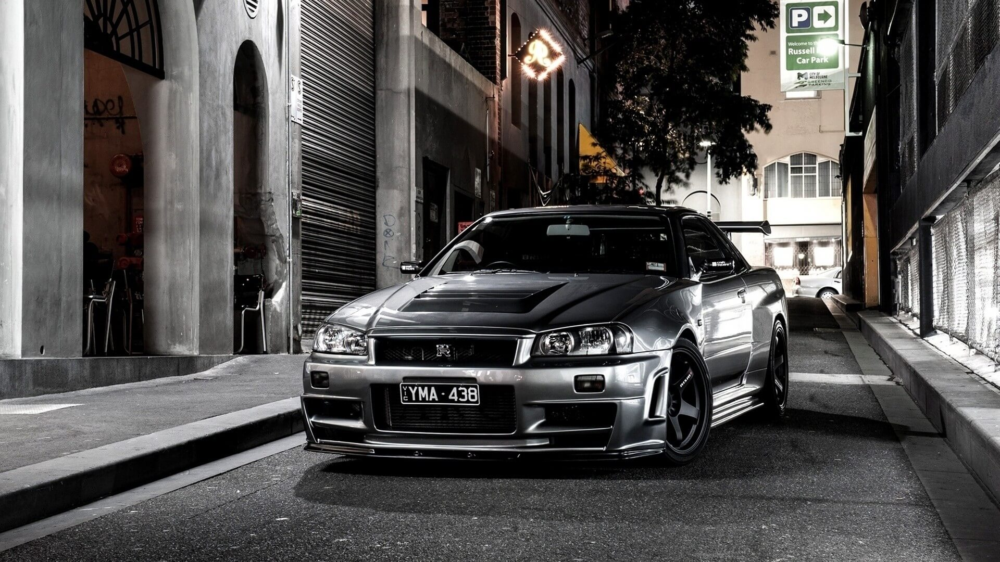

Photo Viewer
What's photo viewer?
Photo Viewer is a site that allows you to display a group of pictures in two different forms ( Fade - Slide) so that you can share them with your friends, and the site gives you a set of settings to control the way pictures are displayed and the time period for displaying each image and a group of other settings that we will explain how to use them below.
How to use photo viewer?
If you want to go to the Next image, you can use one of these two methods:
Click the Next button that appears in the control panel in the bottom of the page
Click on the Right arrow on the keyboard
If you want to go to the Previous image, you can use one of these two methods:
Click the Previous button that appears in the control panel in the bottom of the page
Click on the Left arrow on the keyboard
If you want to go to the Last image, you can use one of these two methods:
Click the Last button that appears in the control panel in the bottom of the page
Click on the Down arrow on the keyboard
If you want to go to the Last image, you can use one of these two methods:
Click the Last button that appears in the control panel in the bottom of the page
Click on the Up arrow on the keyboard
If you want to toggle between [ On / Off ] Random Images, you can use one of these two methods:
Click the Random button that appears in the control panel in the bottom of the page
Click on the Enter Key on the keyboard
If you want to view Images without any thing, you can use one of these two methods:
Click on the image
Click on the F Key on the keyboard
If you want to open Gallery, you can use one of these two methods:
Click the Gallery button that appears in the control panel in the bottom of the page
Click on the G Key on the keyboard
If you want to open Settings, you can use one of these two methods:
Click the Settings button that appears in the control panel in the bottom of the page
Click on the S Key on the keyboard
If you want to reset all Settings, you can use one of these two methods:
Click the reset button that appears in the Settings Box in the top of the page
Click on the R Key on the keyboard
If you want to close any open thing like [ Gallery - Settings - Guide ], you can use this method:
Click on the Esc Key on the keyboard
If you want to toggle Guide, you can use this method:
Click on the H Key on the keyboard
Settings
 
